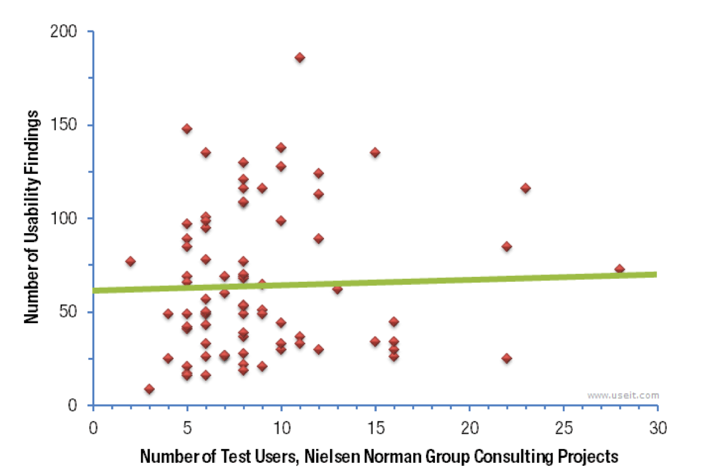

HCI and Evaluation
MIDS W209: Information Visualization
John Alexis Guerra Gómez | john.guerra[at]gmail.com | @duto_guerra
Andy Reagan | andy[at]andyreagan.com |@andyreagan
https://johnguerra.co/lectures/MIDS_W209_Information_Visualization/12_Evaluation/
Andy Reagan | andy[at]andyreagan.com |@andyreagan
https://johnguerra.co/lectures/MIDS_W209_Information_Visualization/12_Evaluation/

Partially based on slides from Tamara Munzner
What We Are Going to Learn
- Human Computer Interaction
- Techniques for evaluation
- Controlled experiments
- Interviews
- Surveys
- Case studies
- Usability studies
- Running the usability study
- Choosing tasks
- Prioritization
- Likert scales
Evaluation
- Controlled experiments
- Natural settings
- Any setting not involving users (expert reviews)
Expert Reviews
- Design experts
- Visualization experts
- Usability experts
- Domain experts
Types of Expert Reviews
- Heuristic evaluation (golden rules)
- Guidelines review
- Consistency inspection
- Cognitive walkthrough
- Metaphors of human thinking
- Formal usability inspection (courtroom style)
- Accesibility inspection
Eight Golden Rules of Design
- Strive for consistency
- Cater for universal usability
- Offer informative feedback
- Design dialogs to yield closure
- Prevent errors
- Permit easy reversal of actions
- Support internal locus of control
- Reduce short-term memory load
Controlled Experiments
- Experiments in the lab
- Controlled confounding variables
- Measure one or more quantitative variables
- Usability testing
- Living labs
What to Measure?
- Time to learn
- Speed of performance
- Rate of errors
- Retention over time
- Subject satisfaction
Variables
- Independent variables (causes)
- Dependent variables (effect)
- Extraneous variables (that can affect the experiment)
Controlled Experiment example
Tasks and conditions
Controlling extraneous variables
Tasks
Results
Usability Testing
Usability Testing

Natural Settings Involving Users
- Observation
- Interviews
- Logging
Triangulation
Different researchers observe the same effect.
Interviews
- Unstructured
- Structured
- Semi-structured
- Focus group
- Telephone/online interviews
Questionnaire
Like interviews but without the researcher present
Likert Scales
Likert Scale
What do you think?
- Strongly disagree
- Disagree
- Okay
- Agree
- Strongly agree
More About Likert Scales
- Can be 3, 5, 7, or more responses
- Continuous or discrete
- Middle response is the balance
Likert Scales d3
Likert Scales Vega-Lite
https://vega.github.io/vega-lite/examples/layer_likert.htmlLikert Scales Vega-L ite (cont.)
https://vega.github.io/vega-lite/examples/concat_layer_voyager_result.htmlOther Methods
Observation
- User's setting
- Can be direct or indirect
Direct Observation in the Field
Ethnography
Direct Observation in Controlled Environments
- Think aloud techniques
Direct Observation: Tracking Users
- Diaries
- Interaction logs and web analytics
MILCS
- Multi-dimensional
- In-depth
- Long-term
- Case studies
TreeVersity MILCS
- Thirteen different case studies with nine agencies
- TreeVersity 2: UMD Budget 2010 - 2012
Focus groups
One researcher, many attendees
Prototyping
- Low vs. high fidelity?
- Read data
- Build scenarios, tell a story
Quatitative evaluation
Analysis of Variance (ANOVA) for comparing the meansRunning a Usability Study
Validity Checks
- Earlier stages:
- Observe and interview target users (needs assessment)
- Design data abstraction/operation (data types, transformation, operations)
- Justify encoding/interaction design (design heuristics, perception research)
- Informal analysis/qualitative analysis of prototypes (task-based)
- Algorithm complexity analysis/evaluation
- Mid- and later stages:
- Qualitative analysis of system (task-based)
- Algorithm performance analysis
- Lab or crowdsourced user study
- Field study of the deployed system
Formal Usability Study
Goal: Does the visualization allow the user/analyst to perform key tasks?
Task-Oriented Visual Insights
- Basic insights:
- Read a value
- Identify extrema
- Characterize distribution
- Describe correlation
- Comparative insights:
- Compare values
- Compare extrema
- Compare distribution
- Compare correlation
Usability Study: Logistics
- You will need:
- Visualization with test data loaded
- Consent form (if required)
- Task list
- Protocol (study procedures and debrief questions)
- Surveys/interviews and any additional data-collection instruments
- Audio or video recorder, notepad
How Many People Do You Need?
"Lab" Doesn’t Need to Mean a Formal Lab
Software for Collecting Audio/Video
- Video of user
- Screencapture of user actions
- Audio of entire session
Online Tools
- Surveys
- Mouse tracking/navigation tracking
Prioritization
You’ve Collected Data
- Task completion
- Time on task
- Notes
- Interview responses
- Survey responses
- ...Then what?
What is the Analyst’s Information Scent?
MoSCoW Prioritization
- Must
- Should
- Could
- Won't
Severity Ratings
- Not a real problem
- Cosmetic
- Minor usability issue
- Major usability issue
- Critical issue
Limitations
- Ecological validity
- Are performance-oriented tasks the complete story?
Usability Study Demo
Interview Michael Bessey
Michael Bessey leads the Data Visualization team in MassMutual's centralized Data Science Department. Through his time here, Michael has led efforts to build and rebuild visualization systems that drive decision making through the top levels of the company.
Interview Fereshteh Amini
Fereshteh Amini is a Data Visualization Specialist at Microsoft with a PhD from the University of Manitoba.
References
- Shneiderman, B. and Plaisant, C., 1987. Designing the user interface: Strategies for effective human-computer interaction
- Rogers, Y., Sharp, H., Preece, J. and Tepper, M., 2007. Interaction design: beyond human-computer interaction.
- Martin, D.W., 2007. Doing psychology experiments. Cengage Learning.
What We Learned
- Human Computer Interaction
- Techniques for evaluation
- Controlled experiments
- Interviews
- Surveys
- Case studies
- Usability studies
- Running the usability study
- Choosing tasks
- Prioritization
- Likert scales